СТРОИТЕЛЬНЫЕ НОРМЫ И ПРАВИЛА
ОПРЕДЕЛЕНИЕ РАСЧЕТНЫХ
ГИДРОЛОГИЧЕСКИХ
ХАРАКТЕРИСТИК
СНиП 2.01.14-83
ГОСУДАРСТВЕННЫЙ КОМИТЕТ СССР ПО ДЕЛАМ СТРОИТЕЛЬСТВА
МОСКВА 1985
РАЗРАБОТАНЫ Государственным гидрологическим институтом Госкомгидромета (руководители темы: д-р геогр. наук А.А.Соколов и д-р техн. наук А.В.Рождественский, ответственные исполнители: д-р геогр. наук В.Е.Водогрецкий, кандидаты техн. наук А.Г.Лобанова и С.М.Тумановская, канд. геогр. наук Б.М.Доброумов, инженеры Э.А.Зайцева и М.А.Жукова) и институтом Гидропроект им. С.Я.Жука Минэнерго СССР (руководители темы: инженеры Б.Ф.Бологуров и О.В.Польский, ответственные исполнители: инженеры М.Б.Лосева и М.В.Смолякова) с участием Института водных проблем А.Н. СССР, Украинского регионального научно-исследовательского института, Закавказкого регионального научно-исследовательского института и Дальневосточного регионального научно-исследовательского института Госкомгидромета, ВНИИ ВОДГЕО и ПНИИИС Госстроя СССР, ЦНИИС и института Союздорпроект Минтрансстроя Азербайджанского государственного университета Минвуза Азербаджанской ССР.
ВНЕСЕНЫ Государственным комитетом СССР по гидрометеорологии и контролю природной среды.
ПОДГОТОВЛЕНЫ К УТВЕРЖДЕНИЮ Отделом технического нормирования и стандартизации Госстроя СССР.
Исполнители: Е.А.Троицкий и В.А.Кулиничев.
С введением в действие СНиП 2.01.14-83 «Определение расчетных гидрологических характеристик» утрачивают силу Указания по определению расчетных гидрологических характеристик (СН 435-72).
|
Государственный комитет СССР по делам строительства |
Строительные нормы и правила |
СНиП 2.01.14-83 |
|
Определение расчетных гидрологических характеристик |
Взамен |
Настоящие нормы распространяются на определение расчетных гидрологических характеристик при проектировании речных гидротехнических сооружений, железных и автомобильных дорог, сооружений мелиоративных систем, систем водоснабжения, планировки и застройки населенных пунктов, генеральных планов промышленных и сельскохозяйственных предприятий, а также при разработке мероприятий по борьбе с наводнениями.
Настоящие нормы не распространяются на определение расчетных гидрологических характеристик при инженерных изысканиях и проектировании объектов, подлежащих строительству на устьевых участках рек, находящихся в зоне влияния морских приливов и отливов, а также на селеопасных реках.
ОБЩИЕ ПОЛОЖЕНИЯ
1.1. Определение расчетных гидрологических характеристик должно основываться на данных гидрометеорологических наблюдений, опубликованных в официальных документах Государственного комитета СССР по гидрометеорологии и контролю природной среды в области гидрологии, а при необходимости на дополнительном учете данных инженерно-гидрометеорологических изысканий.
1.2. При определении расчетных гидрологических характеристик необходимо применять следующие приемы расчетов:
а) при наличии данных гидрометрических наблюдений - непосредственно по этим данным;
б) при недостаточности данных гидрометрических наблюдений - приведением их к многолетнему периоду по данным рек-аналогов с более длительными рядами наблюдений;
в) при отсутствии данных гидрометрических наблюдений - по формулам с применением данных о реках-аналогах и картам, основанным на совокупности данных наблюдений всей сети гидрометрических станций и постов данного района или более обширной территории, включая материалы инженерно-гидрометеорологических изысканий.
1.3. В качестве критерия при определении величины расчетной гидрологической характеристики для каждого вида строительства принимается ежегодная вероятность превышения (обеспеченность) этой величины, устанавливаемая нормативными документами, утвержденными или согласованными Госстроем СССР.
1.4. Данные гидрометрических наблюдений следует подвергать проверке, включающей анализ:
полноты и надежности наблюдений за уровнями и расходами воды, наличия данных о наивысших (мгновенных и среднесуточных) и наинизших уровнях воды за время наблюдений при свободном от льда русле, ледяном покрове, ледоходе, заторе льда, заросшем водной растительностью русле, подпоре от нижерасположенной плотины, сбросах воды выше гидрометрического створа и др.;
увязки высотных отметок водомерных постов и уровней за весь период наблюдений;
увязки годового и сезонного стока воды, максимальных и минимальных расходов и уровней воды в пунктах наблюдений по длине реки;
полноты учета стока воды на поймах и в протоках;
обоснованности способов подсчета стока воды по осредненным или ежегодным кривым расходов воды или же другими методами;
обоснованности экстраполяции кривых расходов воды до наивысших и наинизших уровней, а также точности расчета стока воды по кривым расходов за год, сезон, месяц, сутки;
необходимости восстановления наблюдений, пропущенных за отдельные годы, месяцы, дни;
точности расчетов стока воды за зимний и переходный периоды, обоснованности принятых при расчете стока воды коэффициентов, учитывающих зарастание русла водной растительностью, правильности учета деформации русла и переменного подпора;
влияния хозяйственной деятельности на речной сток.
|
Внесены |
Утверждены |
Срок введения в действие |
1.5. Данные гидрометеорологических наблюдений низкого качества при невозможности их уточнения исключаются из расчетного ряда наблюдений. В необходимых случаях должен выполняться пересчет стока воды за отдельные дни, месяцы, годы.
Для рек, в бассейнах которых интенсивно разбивается хозяйственная деятельность, необходимо приведение гидрологических рядов к однородным условиям.
Приведение стока к однородным условиям производится:
регрессионными методами с использованием парной и множественной корреляции;
водно-балансовыми методами с учетом изменения всех элементов водного баланса.
Выбор методов определяется наличием и качеством необходимой гидрометеорологической информации. При комплексном учете влияния видов хозяйственной деятельности применяются регрессионные методы, а при дифференцированном - водно-балансовые. Оценка надежности восстановленного речного стока определяется статическими методами. Приведение стока к однородным условиям не производится, если суммарная величина его изменений не выходит за пределы случайной средней квадратической ошибки исходных данных наблюдений.
1.7. Оценка однородности рядов гидрометрических наблюдений осуществляется на основе генетического анализа условий формирования речного стока путем выявления причин, обусловливающих неоднородность исходных данных наблюдений. При необходимости количественной оценки однородности данных наблюдений применяются статистические критерии однородности средних значений и дисперсий с учетом внутрирядных и междурядных корреляционных связей.
1.8. При выборе рек-аналогов необходимо учитывать следующие условия:
возможную географическую близость расположения водосборов;
сходство климатических условий;
однородность условий формирования стока, - однотипность почв (грунтов) и гидрогеологических условий, по возможности близкую степень озерности, залесенности, заболоченности и распаханности;
площади водосборов должны отличаться не более, чем в 10 раз, а их средние высоты (для горных рек) - не более, чем на 300 м;
отсутствие факторов, существенно искажающих величину естественного речного стока (регулирование стока, сбросы, изъятие на орошение и другие нужды).
1.9. Величины расчетных геологических характеристик должны устанавливаться на основе современного и перспективного уровня комплексного использования водных ресурсов.
1.10. Основные гидрологические характеристики:
Расход воды Q, м3/с;
Объем стока воды V, м3;
Модуль стока воды q, м3/(с×км2);
Слой стока воды h, мм;
Уровень воды Н, м.
2. ОПРЕДЕЛЕНИЕ РАСЧЕТНЫХ ГИДРОЛОГИЧЕСКИХ ХАРАКТЕРИСТИК ПРИ НАЛИЧИИ ДАННЫХ ГИДРОМЕТРИЧЕСКИХ НАБЛЮДЕНИЙ
Общие указания
Примечание. Продолжительность периода наблюдений считается достаточной, если рассматриваемый период репрезентативен (представителен), а величина относительной средней квадратической ошибки расчетного значения исследуемой гидрологической характеристики не превышает 10%.
Оценка репрезентативности ряда наблюдений за п лет производится по рекам-аналогам с числом лет наблюдений N (N > п, при N > 50 лет). Репрезентативность ряда наблюдений за гидрологической характеристикой определяется по разностным интегральным кривым речного стока или сопоставлением кривых распределения речного стока по реке-аналогу за периоды n и N лет.
Если относительные средние квадратические ошибки превышают указанный предел и период наблюдений нерепрезентативен, необходимо осуществить приведение рассматриваемой гидрологической характеристики к многолетнему периоду согласно требованиям пп. 3.1-3.5.
Рт=т/(п+1)100%, (1)
где т - порядковый номер членов ряда гидрологической характеристики, расположенного в убывающем порядке; п - общее число членов ряда.
Эмпирические кривые распределения ежегодных вероятностей превышения строятся на клетчатках вероятностей. Тип клетчатки вероятностей выбирается в соответствии с принятой аналитической функцией распределения вероятностей и полученного отношения коэффициента асимметрии Cs к коэффициенту вариации Cv.
2.3. Для сглаживания и экстраполяции эмпирических кривых распределения ежегодных вероятностей превышения, как правило, применяется трехпараметрическое гамма-распределение при любом отношении Cs / Cv. При надлежащем обосновании допускается применять биноминальную кривую распределения (при Cs > 2Cv) или другие функции распределения вероятностей. При неоднородности ряда гидрометрических наблюдений (различные условия формирования стока) допускается применять усеченные и составные кривые распределения ежегодных вероятностей превышения.
2.4. Параметры аналитических кривых распределения - среднее многолетнее значение , коэффициент вариации Cv и отношение коэффициента асимметрии к коэффициенту вариации - устанавливаются по гидрометрическим рядам наблюдений за рассматриваемой гидрологической характеристикой методом наибольшего правдоподобия или методом моментов.
2.5. Расчетный коэффициент вариации Cv и коэффициент асимметрии Cs для трехпараметрического гамма-распределения методом наибольшего правдоподобия следует определять в зависимости от статистик l2 и l3, вычисляемых по формулам:
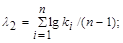
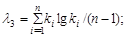
где ki - модульный коэффициент рассматриваемой гидрологической характеристики, определяемый по формуле
ki=Qi/ 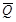
где Qi - погодичные значения расходов воды;
- среднее арифметическое (среднее многолетнее) значение расходов воды, определяемое в зависимости от числа лет гидрометрических наблюдений п по формуле
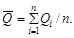
По полученным значениям статистик l2 и l3 определяют расчетный коэффициент вариации и коэффициент асимметрии по обязательному прил. 1.
2.6. Расчетный коэффициент вариации Cv и коэффициент асимметрии Cs для трехпараметрического гамма - распределения и биномиального распределения методом моментов определяется по формулам:
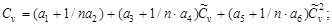
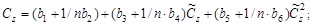
где а1,.., а6; b1, ..., b6 - коэффициенты, определяемые по обязательным прил. 2 и 3;
Cv и Сs - соответственно смещенные коэффициенты вариации и асимметрии, определяемые по формулам:
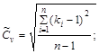
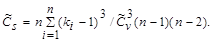
2.7. Расчетные значения отношения коэффициента асимметрии к коэффициенту вариации, а также коэффициента автокорреляции следует принимать как среднее из значений, установленных по данным группы рек с наиболее продолжительными наблюдениями за рассматриваемой гидрологической характеристикой в гидрологически однородном районе.
2.8. Если не представляется возможным произвести расчет согласно требованиям пп. 2.5 и 2.6, допускается применять графоаналитический и графический методы. Параметры биномиального распределения графоаналитическим методом определяются по формулам:
S=(Q5%+Q95%-2Q50%)/(Q5%-Q95%); (10)
s=(Q5%-Q95%)/(Ф5%-Ф95%); (11)
=Q50%-Ф50%s. (12)
где Q5%, Q50%, Q95% - величины расходов воды вероятностью превышения соответственно 5%, 50%, 95%, установленные по сглаженной эмпирической кривой распределения;
Ф5%, Ф50%, Ф95% - нормированные ординаты биноминальной кривой распределения, соответствующие вычисленному значению коэффициента скошенности S.
Величина коэффициента асимметрии определяется по функциональной зависимости от коэффициента S.
При определении параметров графическим методом используется набор клетчаток вероятностей при фиксированном отношении Cs / Cv.
2.9. В случае неоднородности исходных данных гидрометрических наблюдений, когда рассматриваемый ряд состоит из неоднородных гидрологических характеристик, эмпирические и аналитические кривые распределения устанавливаются отдельно для каждой однородной совокупности.
Обобщенная кривая распределения вероятностей превышения независимо от условий формирования членов ряда рассчитывается на основе однородных кривых, установленных по однородным данным одним из двух способов:
а) при наличии наблюдений в каждом году всех однородных элементов режима реки (п1 = п2 = п3 = п) ежегодная вероятность превышения Р % рассматриваемой гидрологической характеристики при любом ее значении определяется по формуле
Р%=[1-(1-Р1)(1-Р2)(1-Р3)]100%, (13)
где Р1; Р2; Р3 - ежегодные вероятности превышения однородных элементов.
При двух однородных гидрологических характеристиках формула (13) принимает вид
Р%=(Р1+Р2-Р1Р2)100% (14)
Вероятности превышения Р1, Р2, Р3 однородных элементов в формулах (13) и (14) выражаются в долях от единицы;
б) если в каждом году имеется лишь одно значение рассматриваемой гидрологической характеристики, ежегодные вероятности превышения при любом ее значении определяются по формуле
Р=(п1Р1+п2Р2+п3Р3)(п1+п2+п3), (15)
где п1, п2, п3 - числа членов однородных совокупностей.
При двух генетически однородных элементах формула (15) принимает вид
Р=(п1Р1+п2Р2)(п1+п2). (16)
При наличии в ряду наблюдений нулевых значений рассматриваемой гидрологической характеристики (например, минимальные расходы воды) ежегодные вероятности превышения определяются по формуле
Р=п1Р1/(п1+п2). (17)
Вероятности превышения Р1, Р2, Р3 в формулах (15), (16), (17) выражаются в процентах.
Параметры кривых распределения однородных элементов устанавливаются согласно требованиям пп. 2.5, 2.6, 2.8.
2.10. Для наибольшего или наименьшего членов ряда гидрометрических наблюдений следует указывать доверительные интервалы эмпирической ежегодной вероятности превышения, определяемые по обязательному прил. 4.
А. При учете одного выдающегося значения гидрологической характеристики, не входящего в непрерывный п-летний ряд данных гидрометрических наблюдений:
а) методом наибольшего правдоподобия в зависимости от статистик l2 и l3, определяемых по формулам:
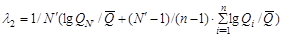
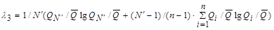
б) методом моментов - по формулам:
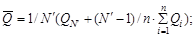
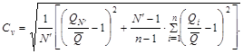
Б. При учете одного выдающегося значения гидрологической характеристики, входящего в п-летний ряд данных гидрометрических наблюдений:
а) методом наибольшего правдоподобия в зависимости от статистик l2 и l3, определяется по формулам:
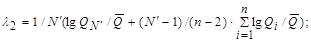
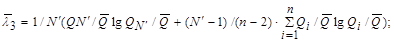
б) методом моментов - по формулам:
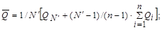
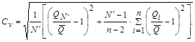
В формулах (18) - (25): N / - число лет, в течении которых выдающееся значение гидрологической характеристики не было превышено.
Эмпирическая ежегодная вероятность превышения выдающегося значения гидрологической характеристики определяется по формуле (1) с заменой п на N /.
а) суммированием расхода воды притоков с учетом времени добегания, впадающих на участке между двумя створами;
б) по разности средних доходов воды в верхнем и нижнем створах участка реки;
в) по методу водного баланса.
Годовой сток воды рек и его внутригодовое распределение
2.13. При определении расчетных гидрологических характеристик годового стока воды рек надлежит выполнять требования, изложенные в пп. 2.1 - 2.12.
2.14. Для определения внутригодового распределения стока воды при наличии данных гидрометрических наблюдений за период не менее 15 лет принимаются следующие методы:
распределение стока по данным рек-аналогов;
метод компоновки сезонов.
2.15. Внутригодовое распределение стока следует рассчитывать по водохозяйственным годам, начиная с многоводного сезона. Границы сезонов назначаются едиными для всех лет с округлением до месяца.
2.16. Деление года на периоды и сезоны производится в зависимости от типа режима реки и преобладающего вида использования стока. Продолжительность многоводного периода следует назначать так, чтобы в принятые его границы включалось половодье за все годы. Период года и сезон, в котором естественный сток может лимитировать водопотребление, принимаются за лимитирующий период и лимитирующий сезон. В лимитирующий период входят два смежных сезона, из которых один является наиболее неблагоприятным в отношении использования стока (лимитирующий сезон).
Для рек с весенним половодьем за лимитирующий период принимаются два маловодных сезона: лето - осень и зима. При преобладании водопотребления на сельскохозяйственные нужды за лимитирующий сезон следует принимать лето - осень, а для гидроэнергетики и в целях водоснабжения - зиму.
2.17. Для высокогорных рек с летним половодьем при преимущественно ирригационном использовании стока за лимитирующий период принимается осень - зима и весна, а за лимитирующий сезон - весна.
При проектировании отвода избыточных вод для борьбы с наводнениями или при осушении болот и заболоченных земель за лимитирующий период принимается многоводная часть года (например, весна и лето - осень), а за лимитирующий сезон - самый многоводный сезон (например, весна).
Расчетная вероятность превышения величины стока за год, за лимитирующие сезон и период определяется по кривым распределения ежегодных вероятностей превышения (эмпирическим или аналитическим).
2.18. Внутригодовое распределение стока за конкретный год наблюдений принимается в качестве расчетного, если вероятность превышения стока за этот год и за лимитирующие период и сезон близки между собой и соответствуют заданной по условиям проектирования ежегодной вероятности превышения.
2.19. Внутригодовое распределение стока при расчете по методу компоновки определяется из условий равенства вероятностей превышения стока за год, стока за лимитирующий период и внутри его за лимитирующий сезон.
Величину стока сезона, не входящего в лимитирующий период, определяются по разности между стоком за год и стоком за этот период, а величины стока за нелимитирующий сезон, входящий в лимитирующий период,- по разности стока этого периода и сезона.
2.20. При близких значениях коэффициентов вариации и асимметрии речного стока за год и лимитирующие период и сезон расчетное внутригодовое распределение определяется как среднее для всех лет распределение стока воды по месяцам (декадам) в процентах от годового стока воды исследуемой реки.
2.21. При незначительном изменении водопотребления в течение года допускается замена календарного распределения стока воды по сезонам и месяцам кривой продолжительности суточных расходов воды за год.
2.22. При изменении стока воды под влиянием хозяйственной деятельности необходимо привести его к естественному стоку воды реки согласно требованиям п. 1.6. По этим данным определяется расчетное внутригодовое распределение стока воды реки и в результаты расчетов вносятся соответствующие изменения.
Максимальный сток воды рек весеннего половодья и дождевых паводков
2.23. Расчетные гидрологические характеристики максимального стока воды рек весеннего половодья и дождевых паводков следует определять согласно требованиям пп. 2.1 - 2.12.
2.24. Для рек с продолжительностью стояния максимальных расходов воды сутки и более расчет производится по среднесуточным значениям, менее суток - по мгновенным расходам воды. В случае прохождения максимального расхода воды между строками наблюдений, необходимо исследовать соотношения между среднесуточными и мгновенными максимальными расходами воды.
2.25. При невозможности разделения максимальных годовых расходов воды на максимумы дождевых и талых вод допускается построение кривых распределения ежегодных вероятностей превышения максимальных расходов воды независимо от их происхождения.
2.26. Расчетные максимальные расходы воды зарегулированных рек определяются исходя из расчетного максимального расхода воды реки в естественном незарегулированном состоянии с изменением его в результате хозяйственной деятельности в бассейне реки и трансформации проектируемыми или действующими водохранилищами.
На реках с каскадным расположением гидроузлов расчетные максимальные расходы воды следует определять с учетом влияния вышележащих гидроузлов на приток к нижерасположенным и с учетом боковой приточности между гидроузлами.
2.27. К значениям величин расчетных максимальных расходов воды QР% вероятностью превышения 0,01 следует прибавлять гарантийную поправку DQР%, определяемую по формуле
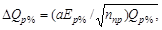
где а - коэффициент, характеризующий гидрологическую изученность рек: для гидрологически изученных рек принимается равным 1,0, а для слабоизученных - 1,5:
ппр - число лет наблюдений с учетом приведения к многолетнему периоду;
Ер% - величина, характеризующая случайную среднюю квадратическую ошибку расчетного расхода воды ежегодной вероятности превышения Р=0,01%, определяемая по обязательным прил. 5 и 6.
Значение величины гарантийной поправки DQР% должно приниматься не более 20% значения величины максимального расхода воды QР%. Принимаемый расчетный расход с учетом гарантийной поправки не должен быть меньше, чем наибольший наблюденный расход.
2.28. Гидротехнические сооружения, разрушение которых приводит к катастрофическим последствиям со значительным ущербом, необходимо проверять на пропуск максимального расхода воды вероятностью превышения Q = 0,01% с учетом гарантийной поправки.
2.29. Для временных водопропускных гидротехнических сооружений расчетные ежегодные вероятности превышения максимальных расходов воды принимаются согласно п. 1.3.
2.30. При пропуске весенних половодий (дождевых паводков) через гидроузлы, образующие каскад, расчетные сбросные расходы воды нижележащих гидроузлов следует определять с учетом влияния вышележащего гидроузла, а также боковой приточности с частных водосборов между гидроузлами, соответствующей расчетной вероятности превышения для рассматриваемого нижележащего гидроузла. Расчет максимальных расходов воды боковой приточности производится согласно требованиям п. 2.12.
Минимальный сток воды рек
2.31. Определение расчетных минимальных расходов воды рек производится согласно требованиям пп. 2.1 - 2.12.
При значительных расхождениях аналитической кривой и фактических данных наблюдений применяются эмпирические кривые распределения вероятностей превышения.
2.32. Расчетные минимальные расходы воды рек определяются для зимнего и летнего сезонов и включают следующие характеристики: минимальный среднесуточный расход, минимальный среднемесячный расход за календарный месяц, или за 30 дней, с наименьшим стоком.
Наивысшие уровни воды рек и озер
2.33. Расчетные наивысшие уровни воды рек в створе поста допускается определять (при неоднородности данных) по эмпирической кривой распределения ежегодных вероятностей превышения наивысших срочных уровней воды, относящихся к фазово-однородным условиям режима реки. Эмпирическая ежегодная вероятность превышения наивысших уровней воды рек определяется согласно требованиям п. 2.2. При определении вероятности превышения выдающегося уровня воды необходимо соблюдать требования п. 2.11.
2.34. Для рек, на которых наивысшие уровни воды наблюдаются в разные сезоны и обусловлены различными фазами режима (например, снеговыми половодьями, дождевыми паводками и др.), кривые распределения ежегодных вероятностей превышения рассчитываются для обеих групп фазово-однородных уровней воды согласно требованиям п. 2.9.
2.35. При наличии на реке ледовых явлений для определения наивысших уровней воды применяются две кривые распределения ежегодных вероятностей превышения: одна - для наблюденных наивысших уровней воды, а вторая - для наивысших уровней воды при свободном состоянии русла, которые определяются по кривой расходов воды Q = f(H).
2.36. Определение наивысших уровней воды при свободном состоянии русла в случае однозначной связи уровней и расходов воды производится с увязкой равнообеспеченных значений наивысших уровней воды, определенных согласно требованиям п. 2.34, и расходов воды - пп. 2.1-2.12.
2.37. Перенос расчетных наивысших уровней воды с одного пункта в другой при свободном состоянии русла в зависимости от наличия данных гидрометрических наблюдений производится одним из следующих способов:
а) по кривым расходов воды Q = f(H) для бесприточных и малоприточных участков;
б) по кривым связи соответственных уровней воды;
в) по уклону или продольному профилю водной поверхности.
2.38. При переносе на соседние створы расчетных наивысших уровней воды на горных участках рек должно учитываться влияние местных искривлений поверхности воды в результате скоростного напора.
Перенос расчетных наивысших уровней воды в пределах участков рек, находящихся в подпоре,производится по кривым подпора.
2.39. Перенос на другие створы расчетных наивысших уровней воды в период ледохода, при отсутствии заторов льда на участке реки производится по графикам связи соответственных уровней воды или по кривым расходов воды Q = f(H) и расходам воды Qр%, определяемым по формуле
Q/р%= Qр%/Кзим, (27)
где Qр% - расход воды расчетной ежегодной вероятности превышения, м3/с;
Кзим - коэффициент, учитывающий изменение гидравлики потока во время ледохода, принимаемый по данным наблюдений в опорном пункте.
Примечание. В тексте СНиП категории рек (большие, средние, малые) в зависимости от площади водосбора приняты в соответствии с ГОСТ 19179-73.
2.41. Определение расчетных наивысших уровней воды озер следует производить по кривым распределения ежегодных вероятностей превышения уровней воды озер теми же приемами, что и для рек. При назначении расчетных уровней воды озер, полученных по кривым распределения ежегодных вероятностей превышения этих гидрологических характеристик, необходимо учитывать высоту ветрового нагона DНв, определяемую по СНиП 2.06.04-82.
3. ОПРЕДЕЛЕНИЕ РАСЧЕТНЫХ ГИДРОЛОГИЧЕСКИХ ХАРАКТЕРИСТИК ПРИ НЕДОСТАТОЧНОСТИ ДАННЫХ ГИДРОМЕТРИЧЕСКИХ НАБЛЮДЕНИЙ
3.1. При недостаточности данных гидрометрических наблюдений приведение параметров кривых распределения ежегодных вероятностей превышения гидрологических характеристик (Q, H, h) к многолетнему периоду с применением парной и множественной регрессии осуществляется при соблюдении следующих условий:
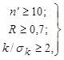
где п/ - число лет совместных наблюдений;
R - коэффициент корреляции между величинами гидрологических характеристик исследуемой реки и реки-аналога;
к - коэффициент регрессии;
sk - средняя квадратическая ошибка коэффициента регрессии.
Примечание. Для оценки параметров кривых распределения допускается применение графических и графоаналитических методов приведения к многолетнему периоду, а также использование метеорологических факторов, период наблюдений за которыми превышает период наблюдений за рассматриваемой гидрологической характеристикой.
3.2. Приведение параметров кривых распределения ежегодных вероятностей превышения рассматриваемой гидрологической характеристики (например, расходов воды Q) к многолетнему периоду осуществляется в двух вариантах:
а) средняя многолетняя величина определяется по формуле
=п/+R(sп//sп/а)(а-п/,а), (29)
где п/; п,/,а - соответственно для исследуемой реки и реки-аналога среднее арифметические величины гидрологической характеристики, вычисленные за период совместных наблюдений п/ лет;
,а - соответственно для исследуемой реки и реки-аналога средние многолетние величины гидрологической характеристики за N лет;
sп/,sп/,а - соответственно для исследуемой реки и реки-аналога среднее квадратические отклонения гидрологической характеристики за совместный период п/ лет.
Коэффициент вариации определяется по формуле
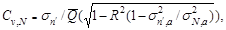
где sN,а - среднее квадратическое отклонение гидрологической характеристики за N-летний период для реки-аналога;
б) по погодично восстановленным по уравнениям регрессии значениям гидрологической характеристики совместно с данными гидрометрических наблюдений рассчитываются параметры кривых распределения согласно требованиям пп. 2.5, 2.6.
Систематическое преуменьшение коэффициента вариации исключается путем дополнительного расчета погодичных величин Q/i по формуле
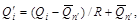
где Qi - погодичные величины гидрологических характеристик, рассчитанные по уравнению регрессии.
3.3. Приведение расчетных гидрологических параметров к многолетнему периоду наблюдений осуществляется последовательно по нескольким уравнениям регрессии в порядке убывания парного или множественного коэффициентов корреляции при соблюдении требований п. 3.1.
3.4. При наличии нелинейных связей между гидрологическими характеристиками восстанавливать их ежегодные величины необходимо за период гидрометрических наблюдений на реке-аналоге. Параметры распределения определяются по восстановленным значениям стока совместно с данными гидрометрических наблюдений.
3.5. Расчетные значения отношения коэффициента асимметрии к коэффициенту вариации Cs/Cv принимаются согласно требованиям п. 2.7.
4. ОПРЕДЕЛЕНИЕ РАСЧЕТНЫХ ГИДРОЛОГИЧЕСКИХ ХАРАКТЕРИСТИК ПРИ ОТСУТСТВИИ ДАННЫХ ГИДРОМЕТРИЧЕСКИХ НАБЛЮДЕНИЙ
Годовой сток воды рек и его внутригодовое распределение
4.1. При отсутствии данных гидрометрических наблюдений величины среднего многолетнего стока и коэффициента вариации следует определять интерполяцией между значениями, полученными для рек-аналогов по данным наиболее продолжительных рядов гидрометрических наблюдений или приведенными к многолетнему периоду в рассматриваемом районе с учетом влияния местных факторов (наличие карста, выходов подземных вод, особенностей геологического строения бассейна, характера почв (грунтов), промерзания и пересыхания рек, различия в средних высотах водосборов и других факторов).
Примечания: 1. Величины среднего многолетнего годового стока и коэффициента вариации допускается определять по совместным картам этих параметров, опубликованным в официальных документах Госкомгидромета в области гидрологии.
2. Коэффициент вариации годового стока Сv следует определять по формуле
Cv=a/ 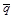
где a - параметр, определяемый по данным рек-аналогов, л/с;
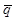
А - площадь водосбора реки до расчетного створа, км2.
3. Расчетное значение отношения коэффициента асимметрии к коэффициенту вариации Cs/Cv определяется согласно требованиям п. 2.7.
4.2. Для неизученной реки границы сезонов и лимитирующего периода, среднее распределение стока по сезонам в долях от годового, соотношения между коэффициентами вариации сезонного и годового стока, распределение стока маловодных сезонов по месяцам для определения группы водности сезона принимаются по данным реки-аналога.
4.3. При отсутствии надежных аналогов внутригодовое распределение рассчитывается по районным схемам или по региональным зависимостям статистических параметров сезонного стока от определяющих факторов (площади водосбора, его средней высоты, характера почв (грунтов), озерности и других факторов).
Максимальный сток воды рек весеннего половодья
4.4. Методы расчета максимальных расходов воды рек весеннего половодья, изложенные в настоящем разделе, следует применять при расчете для водосборов с площадями от элементарно малых (менее 1 км2) до 20000 км2 на европейской и до 50000 км2 на азиатской территориях СССР.
4.5. Расчетный максимальный расход воды весеннего половодья Qр% м3/c, заданной ежегодной вероятностью превышения Р% для равнинных и горных рек следует определять по формуле
Qp% = [K0hp%mdd1d2/(A+A1)n1] A, (33)
где К0 - параметр, характеризующий дружность весеннего половодья, определяемый по данным рек-аналогов обратным путем по формуле (33);
hр% - расчетный слой суммарного весеннего стока (без срезки грунтового питания), мм, ежегодной вероятностью превышения Р%, определяемый в зависимости от коэффициента вариации Cv и отношения Cs/Cv этой величины, а также среднего многолетнего слоя стока h0, устанавливаемого по рекам-аналогам или интерполяцией;
m - коэффициент, учитывающий неравенство статистических параметров слоя стока и максимальных расходов воды, принимаемый по рекомендуемому прил. 7;
d - коэффициент, учитывающий влияние водохранилищ, прудов и проточных озер;
d1 - коэффициент, учитывающий снижение максимального расхода воды в залесенных бассейнах;
d2 - коэффициент, учитывающий снижение максимального расхода воды в заболоченных бассейнах;
А1 - дополнительная площадь водосбора, учитывающая снижение редукции, км2, принимаемая по рекомендуемому прил. 8;
п1 - показатель степени редукции, принимаемый по рекомендуемому прил. 8.
В структуру формулы (33) при надлежащем обосновании допускается введение дополнительных параметров учитывающих естественное регулирование стока воды рек.
Определение параметров и коэффициентов формулы (33) приведено в пп. 4.5-4.12.
Средний многолетний слой весеннего стока h0 следует определять по данным рек-аналогов или интерполяцией с учетом поправок на влияние местных факторов (площади водосбора, озерности, залесенности, заболоченности и распаханности), отличающихся от зональных.
В степной зоне СССР и в полупустынной зоне Западной Сибири и Казахстана в значения среднего многолетнего слоя весеннего стока, вычисленные по рекам-аналогам или интерполяцией, следует вводить поправочные коэффициенты, принимаемые по рекомендуемому прил. 9.
4.6. Для малых равнинных рек площадью водосбора А < 200 км2 лесостепной, степной, засушливых степей и полупустынной зон средний многолетний слой весеннего стока следует определять по интерполяции с введением поправочных коэффициентов, определяемых по формулам:
а) для лесостепной зоны при средних уклонах водосборов iв £ 70%
k/ = 0,18(iв+1)0,45. (34)
Для рек со средними уклонами водосборов iв>70% значения k/ принимаются равными единице;
б) для засушливых степей, степной и полупустынных зон
k/ = 0,15(iв+1)0,80. (35)
4.7. При наличии озер, расположенных в бассейне реки, в величину среднего многолетнего слоя стока весеннего половодья, определенную по интерполяции, следует вводить коэффициент снижения слоя стока весеннего половодья, принимаемый по рекомендуемому прил. 10.
4.8. Коэффициент вариации слоя стока весеннего половодья следует определять по рекам-аналогам или интерполяцией.
Для рек с площадями водосборов менее 200 км2 в значения, полученные интерполяцией, следует вводить поправочные коэффициенты согласно данным рекомендуемого прил. 11.
Уточнение величины поправочных коэффициентов к Cv допускается производить по региональным зависимостям Cv = f(А) для равнинных рек и Cv = f( 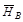
4.9. Расчетное значение отношения коэффициента асимметрии к коэффициенту вариации устанавливается в соответствии с требованиями п. 2.7.
4.10. Коэффициент d, учитывающий снижение максимального стока рек, зарегулированных проточными озерами, следует определять по формуле
d = 1/(1+сАоз), (36)
где с - коэффициент, принимаемый в зависимости от величины среднего многолетнего слоя весеннего стока h0 по рекомендуемому прил. 12;
Аоз - средневзвешенная озерность, %, определяется по формуле
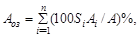
где Si - площадь зеркала озера, км2;
Ai - площадь водосбора озера, км2.
При наличии в бассейне озер, расположенных вне главного русла и основных притоков, величину коэффициента d следует принимать для Аоз:
менее 2% - 1; более 2% - 0,8.
Коэффициент d, учитывающий снижение, максимального стока рек, зарегулированных водохранилищами, определяется с учетом проектных материалов и эксплуатационных данных.
Влияние прудов, регулирующих меженный сток, при расчете максимальных расходов воды вероятностью превышения менее 5% не учитывается, а при Р > 5% допускается уменьшение расчетной величины расхода воды до 10%.
4.11. Коэффициент d1, учитывающий снижение максимальных расходов воды в залесенных бассейнах, определяется по формуле
d1 = a1/(Ал+1)п2, (38)
где п2 - коэффициент редукции, принимаемый по рекомендуемому прил. 13;
a1 - параметр, принимаемый по рекомендуемому прил. 13;
Ал - залесенность водосбора, %
При залесенности менее 3% или при проточной озерности более 20% коэффициент d1 принимается равным единице.
4.12. Коэффициент d2, учитывающий снижение максимального расхода воды заболоченных бассейнов, определяется по формуле
d2 = 1-b lg(0,1Аs+1), (39)
где b - коэффициент, принимаемый по рекомендуемому прил. 14;
Аs - относительная площадь болот и заболоченных лесов и лугов в бассейне, %;
при наличии внутриболотных озер, рассредоточенных по бассейну и расположенных вне главного русла и основных притоков (Западная Сибирь, зона тундры, Северо-запад европейской территории Союза), последние следует включать в величину относительной площади болот.
При заболоченности менее 3% или при проточной относительной озерности более 20% коэффициент d2 принимается равным единице. Для горных рек коэффициенты d1 и d2 равны единице.
4.13. Расчет максимальных расходов воды Qр% высокогорных районов Средней Азии и Кавказа со средней высотой водосборов более 2000 м следует производить по методу гидрологической аналогии по формуле
Qр% = [qp%,a(hp%,г,/hp%,г,a)(Aa+1/A+1)0,15d/da]A, (40)
где qp%,a - модуль максимального расхода воды вероятностью превышения Р% реки-аналога, м3/(с×км2);
hp%,г и hp%,г,a - соответственно для исследуемой реки и реки-аналога расчетный слой годового стока вероятностью превышения Р%, мм;
Aa - площадь водосбора реки-аналога, км2;
da - коэффициент, учитывающий снижение максимального расхода воды проточными озерами и водохранилищами реки-аналога, определяемый согласно требованиям п. 4.10.
Максимальный сток воды рек дождевых паводков
4.14. Максимальные расходы воды рек дождевых паводков Qр% при наличии рек-аналогов следует определять по редукционной формуле
Qр% = qp%,add2/dad2a(Aa/A)A, (41)
d,da - соответственно для исследуемой реки и реки-аналога коэффициенты, определяемые по формуле (36): при с=0,2 - для лесной и лесостепной зон и с=0,4 - для степной зоны;
d2,d2a - соответственно для исследуемой реки и реки-аналога коэффициенты, определяемые по формуле (39) при b = 0,5;
пs - коэффициент редукции модуля максимального мгновенного расхода воды с увеличением площади водосбора, принимаемый согласно рекомендуемым прил. 15 и 16.
Область применения формулы (41) ограничивается требованиями, приведенными в рекомендуемом прил. 17, при соблюдении условия
kФ £ 1,5kФ,а, (42)
где kФ, kФ,а - соответственно для исследуемой реки и реки-аналога коэффициенты формы водосбора, определяемые в зависимости от длины реки от наиболее удаленной точки водосбора L, км, и площади водосбора А, км2, по формуле
kФ=L/A0,56. (43)
4.15. При несоблюдении условия (42) определение максимальных мгновенных расходов воды рек дождевых паводков при наличии рек-аналогов с площадями водосборов, указанными в рекомендуемом прил. 17, следует производить по редукционной формуле
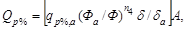
где п4 - коэффициент редукции модуля максимального мгновенно расхода воды с увеличением руслового времени добегания, определяемый по рекомендуемым прил. 16 и 17.
Ф, Фа - соответственно для исследуемой реки и реки-аналога морфологические характеристики русел, определяемые по формуле
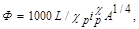
где
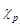
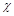
iр - средневзвешенный уклон русла реки, %;
4.16. Максимальные мгновенные расходы воды дождевых паводков при отсутствии рек-аналогов следует определять по редукционной формуле
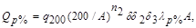
где q200 - модуль максимального мгновенного расхода воды ежегодной вероятности превышения Р = 1% при d = d2 = d3 =1, приведенный к площади водосброса, равной 200 км2, определяется интерполяцией, основанной на совокупности данных наблюдений соседних гидрологически изученных рек в исследуемом районе;
lр% - переходный коэффициент от максимальных мгновенных расходов воды ежегодной вероятности превышения Р = 1% к максимальным расходам воды другой вероятности превышения, принимаемый по рекомендуемым прил. 19 и 20;
d3 - коэффициент, учитывающий изменение параметра q200 с изменением средней высоты водосбора в горных районах, определяемый по данным гидрологически изученных рек.
4.17. Модуль максимального мгновенного расхода воды q200 по мере накопления данных гидрометрических наблюдений для гидрологически изученных рек следует уточнять по формуле
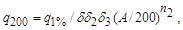
где q1% - модуль максимального мгновенного расхода воды ежегодной вероятности превышения Р=1%.
4.18. Максимальные мгновенные расходы воды рек дождевых паводков Qр%, м3/с, для водосборов с площадями, указанными в рекомендуемом прил. 17, следует определять по формуле предельной интенсивности стока
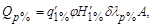
где q/1% - максимальный модуль стока ежегодной вероятности превышения Р = 1%, выраженный в долях от произведения jН1% при d = 1, определяемый по рекомендуемом прил. 21 в зависимости от гидроморфометрической характеристики русла исследуемой реки Фр, продолжительности склонового добегания tск, мин, и района, принимаемого по рекомендуемому прил. 22;
Н/1% - максимальный суточный слой осадков вероятностью превышения Р = 1%, определяемый по данным ближайших к бассейну исследуемого водотока метеорологических станций, имеющих наибольшую длительность наблюдений;
j - сборный коэффициент стока, определяемый по формулам (50), (54).
4.19. Гидроморфометрическая характеристика русла исследуемой реки Фр определяется по формуле
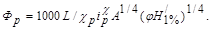
4.20. Сборный коэффициент стока j для равнинных рек при наличии реки-аналога определяется по формуле
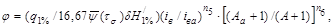
где
16,67 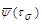
iв, iв,а - соответственно для исследуемой реки и реки-аналога средний уклон водосбора, %;
п5 - принимается по рекомендуемому прил. 24;
п6 - принимается для лесотундры и лесной зоны равным 0,07, для остальных природных зон - 0,11;
ts - продолжительность бассейнового добегания, мин, определяемая по формуле
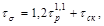
где ts - продолжительность руслового добегания, мин, определяемая по формуле:
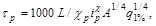
tск - продолжительность склонового добегания, мин, в первом приближении принимаемая для водотоков, расположенных в лесной и тундровой зонах, заболоченностью менее 20% - 60, от 20 до 40% - 100, более 40% - 150; в лесостепной зоне - 60; в степной зоне и засушливых степях - 30; в полупустынной зоне - 30; в горных районах - 10.
Примечание. Уточнение значения tск следует производить по рекомендуемому прил. 25 в зависимости от значения гидроморфологической характеристики склонов Фск, определяемой по формуле
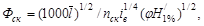
где - средняя длина безрусловых склонов водосбора, км;
пск - коэффициент, характеризующий шероховатость склонов водосбора, определяемый по рекомендуемому прил. 26;
j - определяется при наличии реки-аналога по формуле (50), а при ее отсутствии - по формуле (54).
4.21. Сборный коэффициент стока j для равнинных рек при отсутствии рек-аналогов определяется по формуле
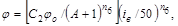
где С2 - эмпирический коэффициент, принимаемый для лесной и тундровой зон равным 1,2; для остальных природных зон - 1,3;
jо - сборный коэффициент стока для водосбора, площадью А, равной 10 км2, со средним уклоном водосбора iв, равным 50% принимается по рекомендуемому прил. 24.
Для горных рек значения j принимаются по рекомендуемому прил.27.
При среднем уклоне водосбора i > 150% значение сборного коэффициента стока j определяется по формуле (54) как при iв = 150% и принимается постоянным независимо от величины iв.
4.22. Расчетные слои дождевого стока при наличии рек-аналогов независимо от площади водосбора определяются по формуле
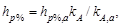
где kA, kA,a - соответственно для водосбора исследуемой реки и реки-аналога коэффициенты, определяемые по рекомендуемому прил. 28.
4.23. Расчетные слои дождевого стока hр% для водосборов площадью А < 50 км2 при отсутствии рек-аналогов определяются по формуле
(56)
где y(ts=150 мин) - относительная интенсивность осадков, принимаемая для водосборов площадью менее 1 км2 степной и лесостепной зон по рекомендуемому прил. 23 при ts = 150 мин. Для других водосборов значение y(ts = 150 мин) принимается равным единице;
l/р% - переходный коэффициент от слоев дождевого стока вероятностью превышения Р=1% к слоям дождевого стока другой вероятности превышения, определяемый по рекомендуемому прил. 29.
Расчетные слои дождевого стока для водосборов площадью более 50 км2 при отсутствии рек-аналогов определяются по данным соседних гидрологически изученных рек интерполяцией.
Минимальный сток воды рек
4.24. Минимальные 30-дневные (средние месячные) расходы воды Q80%, м3/с, ежегодной вероятности превышения Р = 80% за летне-осенний и зимний периоды для средних больших рек следует определять рекам-аналогам или интерполяцией.
Для малых рек с площадью водосбора менее 2000 км2 при отсутствии карста - по редукционной формуле.
Для районов Средней Азии, Казахстана, Урало-Эмбинского, а также бассейна р. Егорлыка применение редукционной формулы допускается для летне-осеннего периода на реках с площадями менее 10000 км2 и зимнего - менее 5000 км2.
4.25. Переходные коэффициенты 30-дневных (средних месячных) расходов воды 80%-ной ежегодной вероятности превышения к минимальным расходам воды других вероятностей превышения, а также к минимальным суточным расходам воды определяются по рекам-аналогам.
4.26. Продолжительность периодов пересыхания и промерзания рек определяется по региональным зависимостям от минимального 30-дневного (среднего месячного) расхода воды.
Наивысшие уровни воды рек и озер
4.27. Расчетные наивысшие уровни воды рек для свободного состояния русла следует определять по максимальному расходу воды расчетной вероятности превышения Р % и кривой расходов воды Q = f(H), которая строится с учетом гидравлических и морфометрических характеристик русла и поймы реки в рассматриваемом створе.
4.28. Расчетные наивысшие уровни рек весеннего половодья устанавливаются с учетом характера водного и ледового режимов реки.
Расчетные наивысшие уровни воды рек в период ледохода определяются согласно требованиям п. 2.40. Значения kзим определяются по рекам-аналогам, а при их отсутствии принимаются:
для малых и средних рек 0,80-0,90
для больших рек 0,91-0,95
При определении расчетных наивысших уровней воды следует учитывать поправку DНз:
при катастрофически мощных заторах более 5 м
при сильных заторах от 3 до 5 м
при средних заторах 3 м и менее
При слабых заторах в величины наивысших уровней воды весеннего половодья поправки не вводятся.
4.29. Для проточных озер наивысшие расчетные уровни воды определяются по кривой расходов воды Q = f(H) (где Н - уровень воды озера) для раствора в истоке реки из озера.
Для бессточных озер наивысшие расчетные уровни воды определяются по расчетному объему притока VР% и кривой V = f(H), где V - объем озера.
4.30. В расчетные уровни воды озер вводятся поправки на ветровое волнение и нагон согласно требованиям п. 2.42.
4.31. При определении расчетных гидрологических характеристик, кроме требований пп. 4.1-4.30, при надлежащем обосновании, допускается применять региональные схемы и методы, требования которых не противоречат требованиям настоящих норм.
5. РАСЧЕТНЫЕ ГИДРОГРАФЫ СТОКА ВОДЫ РЕК ВЕСЕННЕГО ПОЛОВОДЬЯ И ДОЖДЕВЫХ ПАВОДКОВ
5.1. Расчетные гидрографы стока воды рек весеннего половодья и дождевых паводков необходимо рассчитывать при проектировании водохранилищ, отводе вод от сооружений в период их строительства, расчете затопления пойм и лиманов, пропуске высоких вод через дорожные и другие искусственные сооружения.
5.2. Форма расчетных гидрографов принимается по моделям наблюденных высоких весенних половодий или дождевых паводков с наиболее неблагоприятной их формой, для которых основные элементы гидрографов и их соотношения должны быть близки к расчетным.
Для расчета отверстий дорожных и других искусственных сооружений допускается принимать схематизацию гидрографов стока воды рек весеннего половодья и дождевых паводков по геометрическим формам.
5.3. Гидрографы речного стока следует рассчитывать по равнообеспеченным значениям максимального расхода воды, объема стока воды основной волны и объема всего весеннего половодья (дождевого паводка) расчетной ежегодной вероятности превышения.
5.4. Расчетные гидрографы стока воды рек определяются:
а) для весеннего половодья - по среднесуточным расходам воды; гидрографы внутрисуточного хода стока воды рассчитываются, если величина максимального мгновенного расхода воды в 1,5 раза больше соответствующего ему среднесуточного расхода воды;
б) для дождевых паводков - по мгновенным расходам воды.
При наличии данных гидрометрических наблюдений
5.5. При проектировании гидрометрических сооружений натурная модель гидрографа стока воды реки принимаются:
а) одновершинная с наибольшим максимальным расходом воды - при небольшой регулирующей емкости, величина которой значительно меньше объема стока воды весеннего половодья (дождевого паводка);
б) общая с наибольшим объемом стока воды весеннего половодья (дождевого паводка) и наибольшей сосредоточенностью стока в центральной части гидрографа - при больших регулирующих емкостях, величины которых соизмеримы с полным объемом стока воды весенних половодий (дождевых паводков);
в) многовершинная - для рек с многовершинными гидрографами стока воды;
г) общая для всего каскада водохранилищ по расчетному гидрографу притока к верхнему гидроузлу и гидрографам боковой приточности между гидроузлами.
5.6. Основные элементы расчетных гидрографов стока воды рек: максимальный расход воды, объем весеннего половодья (дождевого паводка), объем основной волны расчетной ежегодной вероятности превышения, а также боковая приточность определяются по данных гидрометрических наблюдений согласно требованиям пп.2.1-2.12.
5.7. Общая продолжительность весеннего половодья больших и средних рек, включая дождевые паводки на спаде половодья, принимается одинаковой для всех лет и створов как на основной реке, так и на притоках при условии включения в ее пределы продолжительности всех половодий.
Назначение периода общей продолжительности весеннего половодья допускается принимать переменным для разных лет, но одинаковым по длине реки.
Продолжительность основной волны, включающей максимальную ординату, следует принимать постоянной в подвижных границах для всех лет исходя из условия наибольшего объема стока (притока) за принятый период.
5.8. Расчет гидрографов весеннего половодья (дождевого паводка) выполняется следующими методами:
а) переходом от гидрографа-модели к расчетному гидрографу путем умножения ординат гидрографа-модели на коэффициенты, определяемые по формулам:
k1 = Qp% / Qм; (57)
k2 = (Vp% - Qp% × 86400) / (Vм - Qм × 86400); (58)
k3 = (V/p% - Vp%) / (V/м - Vм), (59)
где Qм и Qр% - соответственно для гидрографа-модели и расчетного гидрографа максимальный среднесуточный расход воды весеннего половодья или мгновенный для дождевого паводка, м3/с;
Vм и Vр% - соответственно для гидрографа-модели и расчетного гидрографа объем основной волны, м3;
V/м и V/р% - соответственно для гидрографа-модели и расчетного гидрографа полный объем весеннего половодья (дождевого паводка), м3;
б) переходом от гидрографа-модели к расчетному гидрографу с применением коэффициента k1, определяемого по формуле (57), и коэффициента kt, определяемого по формуле
kt=(qм/hм)(hp%/qp%), (60)
где qм, qp% - соответственно для гидрографа-модели и расчетного гидрографа модуль максимального среднесуточного расхода воды, м3/(с×км2);
hм, hp% - соответственно для гидрографа-модели и расчетного гидрографа слой стока весеннего половодья (дождевого паводка), мм.
Переход от гидрографа-модели к к расчетному гидрографу по методу, указанному в подпункте «б», возможен только при соблюдении условий:
gр%=gм; ks,p%=ks,м,
где gр% и gм - соответственно для гидрографа-модели и расчетного гидрографа коэффициент полноты g, определяемый по формуле
g=qt/0,0116h; (61)
ks,p% и ks,м - соответственно для гидрографа-модели расчетного гидрографа коэффициент несимметричности, определяемый по формуле
ks=hn/h. (62)
Координаты расчетного гидрографа определяются в зависимости от коэффициентов k1 b kt по формулам:
Qi = Qi,м kt; (63)
ti = ti,м kt, (64)
Qi и Qi,м - соответственно для гидрографа-модели и расчетного гидрографа расходы воды в i-тую единицу расчетного времени;
ti и ti,м - соответственно для гидрографа-модели и расчетного гидрографа ордината времени.
За начало отсчета времени ti,м принимается начало подъема весеннего половодья (дождевого паводка).
5.9. Определение гидрографов внутрисуточного хода стока следует производить по методу, указанному в п. 5.8; обозначения в формулах (60), (61), (62) принимаются следующие:
qм, qp% - соответственно для гидрографа-модели и расчетного гидрографа модули максимального мгновенного расхода воды, м3/(с×км2); hм, hp% - соответственно для гидрографа-модели и расчетного гидрографа максимальный суточный слой стока весеннего половодья h, мм; hп - слой стока за период подъема максимальный суточный волны весеннего половодья, мм; t - продолжительность максимальной суточной волны весеннего половодья, сутки и менее.
При недостаточности данных гидрометрических наблюдений
5.10. При недостаточности данных гидрометрических наблюдений следует выполнять приведение параметров основных элементов расчетного гидрографа к многолетнему периоду согласно пп. 3.1-3.5.
5.11. Форма модели расчетного гидрографа стока воды при условии выполнении требований п. 5.2 принимается согласно пп. 5.4 и 5.5.
5.12. Форма модели расчетного гидрографа стока воды устанавливается путем осреднения нескольких гидрографов стока воды высоких весенних половодий (дождевых паводков), выраженных в относительных единицах. Координаты расчетных гидрографов определяются согласно пп. 5.8 и 5.9.
При отсутствии данных гидрометрических наблюдений
5.13. Параметры основных элементов расчетного гидрографа следует определять согласно пп. 4.1 - 4.23.
5.14. Коэффициент перехода kt от максимального мгновенного расхода воды весеннего половодья Q¢p% к среднесуточному Qp% устанавливается по рекам аналогам. При их отсутствии для равнинных рек допускается определение коэффициента kt по рекомендуемому прил. 30.
5.15. Одновершинный гидрограф стока воды весеннего половодья (дождевого паводка) рассчитывается согласно рекомендуемому прил. 31 по значению коэффициента несимметричности ks, определяемого по формуле (62) по данным рек-аналогов или по значению коэффициента формы гидрографа l, определяемого по формуле
l = qtп / 0,0116h. (65)
Ординаты расчетного гидрографа определяются по формуле
Qi = уQp%, (66)
а абсциссы - по формуле
ti = xtп, (67)
где tп - продолжительность подъема весеннего половодья (дождевого паводка), определяется по формуле
tп = 0,0116lhp% / qp%; (68)
x, у - относительные ординаты расчетного гидрографа стока воды, определяемые по рекомендуемому прил.31.
5.16. Внутрисуточный гидрограф стока определяется по формуле (66), значения относительных ординат у которого принимаются по рекомендуемому прил. 32.
5.17. Для рек с площадью водосбора менее 200 км2 с продолжительностью подъема дождевого паводка сутки или менее, расчетная продолжительность подъема определяется по формуле
in = b/lhp% / qp%, (69)
где b/ - коэффициент, принимаемый при расчете продолжительности подъема дождевого паводка в часах равным 0,28 и в минутах - равным 16,7.
При определении расчетных гидрографов дождевых паводков, согласно требованию п. 5.15, коэффициент несимметричности ks принимать равным 0,30, для рек площадью менее 1 км2 степной и полупустынной зон - равным 0,20.
ПРИЛОЖЕНИЕ 1 (ОБЯЗАТЕЛЬНОЕ)
Номограммы для вычисления параметров трехпараметрического гамма - распределения Cv и Сs методом наибольшего правдоподобия при Cv = 0,15 - 1,40
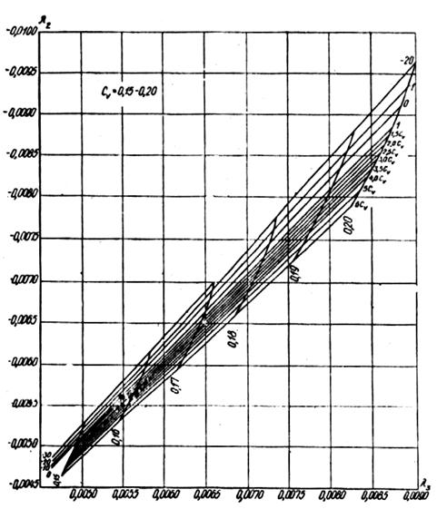
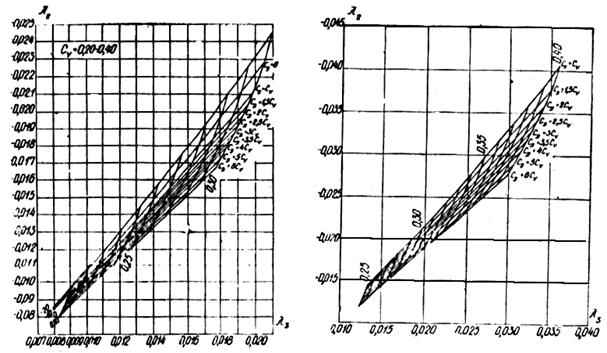
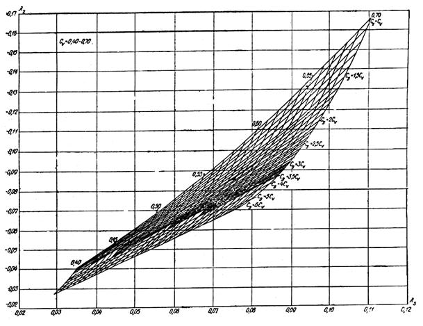
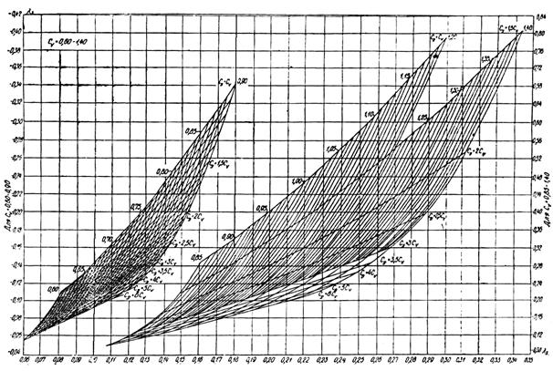
ПРИЛОЖЕНИЕ 2 (ОБЯЗАТЕЛЬНОЕ)
ЗНАЧЕНИЯ КОЭФФИЦИЕНТОВ В ФОРМУЛЕ (6)
|
Значение Cs/Cv |
r (1) |
a1 |
a2 |
a3 |
a4 |
a5 |
a6 |
|
2 |
0 |
0 |
0,19 |
0,99 |
-0,88 |
0,01 |
1,54 |
|
0,3 |
0 |
0,22 |
0,99 |
-0,41 |
0,01 |
1,51 |
|
|
0,5 |
0 |
0,18 |
0,98 |
0,41 |
0,02 |
1,47 |
|
|
3 |
0 |
0 |
0,69 |
0,98 |
-4,34 |
0,01 |
6,78 |
|
0,3 |
0 |
1,15 |
1,02 |
-7,53 |
-0,04 |
12,38 |
|
|
0,5 |
0 |
1,75 |
1,00 |
-11,79 |
-0,05 |
21,13 |
|
|
4 |
0 |
0 |
1,36 |
1,02 |
-9,68 |
-0,05 |
15,55 |
|
0,3 |
0,02 |
2,61 |
1,13 |
-19,85 |
-0,22 |
34,18 |
|
|
0,5 |
-0,02 |
3,47 |
1,18 |
-29,71 |
-0,41 |
58,08 |
|
|
Примечание. Коэффициент автокорреляции между смежными членами ряда r (1), определяемый по формуле 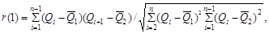 где 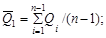 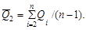 |
|||||||
ПРИЛОЖЕНИЕ 3 (ОБЯЗАТЕЛЬНОЕ)
ЗНАЧЕНИЯ КОЭФФИЦИЕНТОВ b В ФОРМУЛЕ (7)
|
r (1) |
b1 |
b2 |
b3 |
b4 |
b5 |
b6 |
|
0 |
0,03 |
2,00 |
0,92 |
-5,09 |
0,03 |
8,10 |
|
0,3 |
0,03 |
1,77 |
0,93 |
-3,45 |
0,03 |
8,03 |
|
0,5 |
0,03 |
1,63 |
0,92 |
-0,97 |
0,03 |
7,94 |
ПРИЛОЖЕНИЕ 4 (ОБЯЗАТЕЛЬНОЕ)
ДОВЕРИТЕЛЬНЫЕ ИНТЕРВАЛЫ ДЛЯ ЭМПИРИЧЕСКОЙ ЕЖЕГОДНОЙ ВЕРОЯТНОСТИ ПРЕВЫШЕНИЯ
|
Вероятность доверительного интервала, % |
Число лет наблюдений п |
|||||||||||||||||||
|
10 |
20 |
30 |
40 |
50 |
60 |
70 |
80 |
90 |
100 |
110 |
120 |
|||||||||
|
Для наибольшего члена ряда наблюдений |
||||||||||||||||||||
|
5 |
0,5 |
0,27 |
0,20 |
0,15 |
0,10 |
0,09 |
0,08 |
0,07 |
0,06 |
0,05 |
0,04 |
0,03 |
||||||||
|
95 |
25,9 |
13,4 |
9,8 |
7,7 |
6,0 |
5,0 |
4,3 |
3,7 |
3,3 |
3,0 |
2,0 |
1,6 |
||||||||
|
Для наименьшего члена ряда наблюдений |
||||||||||||||||||||
|
5 |
74,1 |
87,0 |
90,0 |
92,2 |
94,0 |
95,0 |
95,7 |
96,3 |
96,7 |
97,0 |
97,8 |
98,5 |
||||||||
|
95 |
99,50 |
99,72 |
99,81 |
99,86 |
99,90 |
99,91 |
99,92 |
99,93 |
99,94 |
99,95 |
99,96 |
99,97 |
||||||||
ПРИЛОЖЕНИЕ 5 (ОБЯЗАТЕЛЬНОЕ)
ЗНАЧЕНИЯ ЕР% ДЛЯ ТРЕХПАРАМЕТРИЧЕСКОГО ГАММА-РАСПРЕДЕЛЕНИЯ
|
Значения Сs / Cn |
Коэффициенты вариации Сv |
||||||||||||||
|
0,1 |
0,2 |
0,3 |
0,4 |
0,5 |
0,6 |
0,7 |
0,8 |
0,9 |
1,0 |
1,1 |
1,2 |
1,3 |
1,4 |
1,5 |
|
|
Методом наибольшего правдоподобия |
|||||||||||||||
|
2 |
0,25 |
0,45 |
0,60 |
0,75 |
0,88 |
0,96 |
1,05 |
1,14 |
1,22 |
1,30 |
1,38 |
1,46 |
1,54 |
1,60 |
1,67 |
|
3 |
0,30 |
0,50 |
0,75 |
1,00 |
1,18 |
1,30 |
1,43 |
1,55 |
1,68 |
1,78 |
1,90 |
2,00 |
2,10 |
2,24 |
2,33 |
|
4 |
0,40 |
0,70 |
1,00 |
1,30 |
1,48 |
1,60 |
1,74 |
1,88 |
2,00 |
2,15 |
2,27 |
2,40 |
2,58 |
2,65 |
2,77 |
|
Методом моментов |
|||||||||||||||
|
2 |
0,25 |
0,45 |
0,60 |
0,75 |
0,88 |
0,96 |
1,05 |
1,14 |
1,22 |
1,30 |
1,38 |
1,46 |
1,54 |
1,60 |
1,67 |
|
3 |
0,30 |
0,57 |
0,84 |
1,10 |
1,34 |
1,55 |
1,74 |
1,93 |
2,11 |
2,28 |
2,42 |
2,56 |
2,68 |
2,80 |
2,92 |
|
4 |
0,40 |
0,77 |
1,11 |
1,43 |
1,73 |
2,00 |
2,22 |
2,42 |
2,60 |
2,77 |
2,94 |
3,10 |
3,26 |
3,41 |
3,57 |
ПРИЛОЖЕНИЕ 6 (ОБЯЗАТЕЛЬНОЕ)
ЗНАЧЕНИЯ ЕР% ДЛЯ БИНОМИНАЛЬНОГО РАСПРЕДЕЛЕНИЯ МЕТОДОМ МОМЕНТОВ
|
Значения Сs / Cn |
Коэффициенты вариации Сv |
||||||||||||||
|
0,1 |
0,2 |
0,3 |
0,4 |
0,5 |
0,6 |
0,7 |
0,8 |
0,9 |
1,0 |
1,1 |
1,2 |
1,3 |
1,4 |
1,5 |
|
|
2 |
0,25 |
0,45 |
0,62 |
0,78 |
0,92 |
1,05 |
1,16 |
1,27 |
1,39 |
1,49 |
1,60 |
1,70 |
1,80 |
1,91 |
2,01 |
|
3 |
0,28 |
0,52 |
0,75 |
0,97 |
1,19 |
1,35 |
1,59 |
1,63 |
1,96 |
2,14 |
2,31 |
2,49 |
2,66 |
2,84 |
3,01 |
|
4 |
0,30 |
0,61 |
0,91 |
1,20 |
1,49 |
1,66 |
2,04 |
2,30 |
2,56 |
2,82 |
3,09 |
3,35 |
3,62 |
3,89 |
4,15 |
ПРИЛОЖЕНИЕ 7 (РЕКОМЕНДУЕМОЕ)
ЗНАЧЕНИЯ КОЭФФИЦИЕНТА m, УЧИТЫВАЮЩЕГО НЕРАВЕНСТВО ПАРАМЕТРОВ СЛОЯ СТОКА И МАКСИМАЛЬНЫХ РАСХОДОВ ВОДЫ
|
Природная зона |
P% |
||||||||
|
0,1 |
1 |
3 |
5 |
10 |
25 |
50 |
75 |
95 |
|
|
Тундра и лесная зона |
1,02 |
1,0 |
0,97 |
0,96 |
0,93 |
0,90 |
0,86 |
0,82 |
0,82 |
|
Лесостепная |
1,04 |
1,0 |
0,96 |
0,93 |
0,89 |
0,80 |
0,72 |
0,64 |
0,58 |
|
Степная |
1,04 |
1,0 |
0,97 |
0,96 |
0,93 |
0,88 |
0,79 |
0,64 |
0,42 |
|
Зона засушливых степей и полупустынь |
1,02 |
1,0 |
0,98 |
0,97 |
0,96 |
0,92 |
(0,80) |
(0,70) |
(0,50) |
ПРИЛОЖЕНИЕ 8 (РЕКОМЕНДУЕМОЕ)
ЗНАЧЕНИЯ ПОКАЗАТЕЛЯ СТЕПЕНИ РЕДУКЦИИ n1 И ДОПОЛНИТЕЛЬНОЙ ПЛОЩАДИ ВОДОСБОРА А1, УЧИТЫВАЮЩЕЙ СНИЖЕНИЕ РЕДУКЦИИ
|
Природная зона |
Для равнинных рек |
|
|
параметр n1 |
дополнительная площадь водосбора А1, км2 |
|
|
Зона тундры и лесная зона (европейская территория СССР, Западная и Восточная Сибирь) |
0,17 |
1 |
|
Лесостепная зона (европейская территория СССР и Западная Сибирь) |
0,25 |
2 |
|
Степная зона, зона засушливых степей и полупустынь (европейская территория СССР, Западная Сибирь, Западный и Центральный Казахстан) |
0,35 |
10 |
|
Примечания: 1. Значения параметров n1 и А1 на границе природных зон определяются по интерполяции, а в пределах выделенных районов следует уточнять эти параметры по опубликованным официальным документам Госкомгидромета в области гидрологии. 2. Для бассейнов рек Припяти и Западного буга значения n1 и А1 следует принимать равными соответственно 0,20 и 1. |
||
ПРИЛОЖЕНИЕ 9 (РЕКОМЕНДУЕМОЕ)
ПОПРАВОЧНЫЕ КОЭФФИЦИЕНТЫ К ЗНАЧЕНИЯМ СРЕДНЕГО МНОГОЛЕТНЕГО СЛОЯ ВЕСЕННЕГО СТОКА
|
Средний многолетний слой весеннего стока h0, мм |
Площадь водосбора, А, км2 |
|||
|
менее 200 |
500 |
1000 |
3000 |
|
|
Менее 10 |
1,8 |
1,5 |
1,3 |
1,0 |
|
20 |
1,6 |
1,3 |
1,2 |
1,0 |
|
30 |
1,4 |
1,2 |
1,1 |
1,0 |
|
50 |
1,2 |
1,1 |
1,0 |
1,0 |
|
Примечание. Для промежуточных значений площадей водосборов и средних многолетних слоев весеннего стока поправочные коэффициенты определяются интерполяцией. |
||||
ПРИЛОЖЕНИЕ 10 (РЕКОМЕНДУЕМОЕ)
ЗНАЧЕНИЯ КОЭФФИЦИЕНТОВ СНИЖЕНИЯ СЛОЯ СТОКА ВЕСЕННЕГО ПОЛОВОДЬЯ
|
Средневзвешенная озерность бассейна Аоз, % |
Коэффициент снижения слоя стока весеннего половодья |
|
От 0 до 2,8 |
0,9-0,8 |
|
От 2,9 до 6,4 |
0,8-0,6 |
|
> 6,4 |
0,6 |
|
Примечание. Данные таблицы не распространяются на реки с внутриболотными и промерзающими озерами. |
|
ПРИЛОЖЕНИЕ 11 (РЕКОМЕНДУЕМОЕ)
ПОПРАВОЧНЫЕ КОЭФФИЦИЕНТЫ К КОЭФФИЦИЕНТАМ ВАРИАЦИИ СЛОЯ СТОКА ВЕСЕННЕГО ПОЛОВОДЬЯ
|
Площадь водосбора А, км3 |
0-50 |
51-100 |
101-150 |
151-200 |
|
Поправочный коэффициент |
1,25 |
1,25-1,20 |
1,20-1,15 |
1,15-1,05 |
ПРИЛОЖЕНИЕ 12 (РЕКОМЕНДУЕМОЕ)
ЗНАЧЕНИЯ КОЭФФИЦИЕНТА с В ФОРМУЛЕ (36)
|
hc, мм |
100 и более |
От 99 до 50 |
От 49 до 20 |
Менее 20 |
|
с |
0,2 |
0,2-0,3 |
0,3-0,4 |
0,4 |
ПРИЛОЖЕНИЕ 13 (РЕКОМЕНДУЕМОЕ)
ЗНАЧЕНИЯ ПАРАМЕТРА a1 И КОЭФФИЦИЕНТА РЕДУКЦИИ n2 В ФОРМУЛЕ (38)
|
Природная зона |
Расположение леса на водосборе |
Значения параметра a1 при АЛ, % |
Коэффициент редукции n2 для почвогрунтов под лесом |
||||
|
от 3 до 9 |
от 10 до 19 |
от 20 до 30 |
различного механического состава |
супесчаных |
суглинистых |
||
|
Лесная |
А |
1,0 |
1,0 |
1,0 |
0,22 |
- |
- |
|
В |
0,85 |
0,80 |
1,75 |
0,22 |
- |
- |
|
|
С |
1,20 |
1,25 |
1,30 |
0,22 |
- |
- |
|
|
Лесостепная |
А,С |
1,0 |
1,0 |
1,0 |
0,16 |
0,20 |
0,10 |
|
В |
1,25 |
1,30 |
1,40 |
0,16 |
0,20 |
0,10 |
|
|
Примечания: 1. Расположение леса на водосборе в таблице принимается условно: А - равномерное, В - в верхней части водосбора; С - в нижней и прирусловой части водосбора. 2. В лесной зоне из-за отсутствия сведений о преобладающих почвах (грунтах) значение n2 принимается равным 0,22 независимо от почв (грунтов) под лесом. |
|||||||
ПРИЛОЖЕНИЕ 14 (РЕКОМЕНДУЕМОЕ)
ЗНАЧЕНИЯ КОЭФФИЦИЕНТА b ДЛЯ РАЗЛИЧНЫХ ТИПОВ БОЛОТ
|
Тип болота |
Коэффициент b |
|
Низинные болота и заболоченные леса и луга на водосборах, сложенных супесчаными и легкосуглинистыми почвами (грунтами) |
0,8 |
|
Водосборы, включающие болота разных типов |
0,7 |
|
Верховые болота на водосборах, сложенных супесчаными и легкосуглинистыми почвами (грунтами) |
0,5 |
|
Верховые болота на водосборах, сложенных среднесуглинистыми и глинистыми почвами (грунтами) |
0,3 |
ПРИЛОЖЕНИЕ 15 (РЕКОМЕНДУЕМОЕ)
ЗНАЧЕНИЯ КОЭФФИЦИЕНТОВ РЕДУКЦИИ В ФОРМУЛЕ (41)
|
Горные районы |
Коэффициенты |
|
|
ns |
n4 |
|
|
Кавказ |
||
|
Черноморское побережье Кавказа (исключая бассейны рек Риони и Аджарисцкали) |
0,55 |
1,30 |
|
Бассейны рек Риони и Аджарисцкали) |
0,15 |
0,70 |
|
Бассейн реки Куры |
0,40 |
1,20 |
|
Средняя Азия |
||
|
Бассейны рек Сырдарья, Амурдарья, Мургаб, Теджен |
0,55 |
1,5 |
|
Реки бассейна оз. Иссык-Куль |
0,55 |
0,8 |
ПРИЛОЖЕНИЕ 16 (РЕКОМЕНДУЕМОЕ)
СХЕМА РАЙОНОВ ЗНАЧЕНИЙ ПОКАЗАТЕЛЕЙ СТЕПЕНИ РЕДУКЦИИ n3 и n4 МАКСИМАЛЬНОГО МОДУЛЯ ДОЖДЕВОГО СТОКА НА ТЕРРИТОРИИ СССР
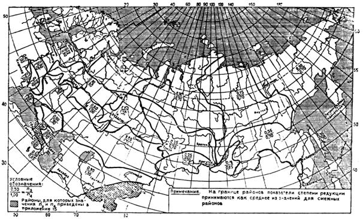
ПРИЛОЖЕНИЕ 17 (РЕКОМЕНДУЕМОЕ)
ОБЛАСТЬ ПРИМЕНЕНИЯ ФОРМУЛ (41), (44), (46), (48)
|
Природная зона |
Расчет производится |
|
|
по формуле предельной интенсивности стока (48) |
по эмпирическим редукционным формулам (41), (44), (46) |
|
|
Равнинная территория |
||
|
Тундровая и лесная |
Менее 50 |
От 50 до 50000 |
|
Лесостепная |
Менее 100 |
От 100 до 20000 |
|
Степная |
Менее 100 |
От 100 до 5000 |
|
Засушливых степей |
Менее 100 |
От 100 до 1000 |
|
Полупустынная |
Менее 100 |
- |
|
Горные районы (500
< 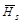 |
||
|
Кавказ |
Менее 100 |
От 100 до 5000 |
|
Карпаты |
Менее 100 |
От 100 до 10000 |
|
Крым |
Менее 200 |
От 200 до 1000 |
|
Прочие районы |
Менее 100 |
От 100 до 10000 |
|
Примечание. При проектировании сооружений на реках с площадями водосборов, превышающими пределы, указанные в таблице, результаты расчетов должны проверяться инженерно-гидрометеорологическими изысканиями. |
||
ПРИЛОЖЕНИЕ 18 (РЕКОМЕНДУЕМОЕ)
ЗНАЧЕНИЯ ПАРАМЕТРОВ х И хр В ФОРМУЛЕ (45)
|
Характеристика русла и поймы |
Параметр х |
Гидравлический параметр русла хр, м/мин |
|
Чистые русла постоянных равнинных рек; русла периодически пересыхающих водотоков (сухих логов) |
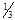 |
11 |
|
Извилистые, частично заросшие русла больших и средних рек; периодически пересыхающие водотоки, несущие во время паводка большое количество насосов |
|
9 |
|
Сильно засоренные и извилистые русла периодически пересыхающих водотоков |
|
7 |
|
Реки САИ и временные водотоки
со средними уклонами ip ³ 35 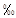 |
|
10 |
ПРИЛОЖЕНИЕ 19 (РЕКОМЕНДУЕМОЕ)
СХЕМА РАЙОНОВ ПАРАМЕТРА lp% и lp% НА ТЕРРИТОРИИ СССР
ПРИЛОЖЕНИЕ 20 (РЕКОМЕНДУЕМОЕ)
ПЕРЕХОДНЫЕ КОЭФФИЦИЕНТЫ lР% ОТ МАКСИМАЛЬНЫХ РАСХОДОВ ВОДЫ ЕЖЕГОДНОЙ ВЕРОЯТНОСТЬЮ ПРЕВЫШЕНИЯ Р = 1% К МАКСИМАЛЬНЫМ РАСХОДАМ ВОДЫ ДРУГОЙ ВЕРОЯТНОСТИ ПРЕВЫШЕНИЯ
|
Номер района по прил. 19 |
Площадь водосбора А, км2, средняя высота водосбора , м |
Переходные коэффициенты lР% при вероятности превышения Р%, равной |
||||||
|
0,1 |
1 |
2 |
3 |
5 |
10 |
25 |
||
|
1 |
А>0 |
1,4 |
1,0 |
0,82 |
0,74 |
0,64 |
0,54 |
0,38 |
|
2 |
А³0,1 |
1,5 |
1,0 |
0,85 |
0,77 |
0,67 |
0,55 |
0,36 |
|
А<0,1 |
1,4 |
1,0 |
0,76 |
0,69 |
0,60 |
0,50 |
0,32 |
|
|
3 |
А>0 |
1,4 |
1,0 |
0,90 |
0,86 |
0,80 |
0,69 |
0,50 |
|
4 |
А³0,1 |
1,4 |
1,0 |
0,82 |
0,77 |
0,70 |
0,60 |
0,40 |
|
А=0,1 |
- |
1,0 |
0,82 |
0,68 |
0,48 |
0,32 |
0,21 |
|
|
5 |
А>0 |
1,6 |
1,0 |
0,83 |
0,74 |
0,62 |
0,46 |
0,28 |
|
6 |
А>0 |
2,5 |
1,0 |
0,70 |
0,58 |
0,42 |
0,30 |
0,14 |
|
7 |
А>0 |
2,4 |
1,0 |
0,74 |
0,63 |
0,50 |
0,32 |
0,19 |
|
8 |
А>0 |
1,6 |
1,0 |
0,82 |
0,74 |
0,64 |
0,47 |
0,30 |
|
9 |
А>0 |
1,45 |
1,0 |
0,85 |
0,79 |
0,70 |
0,55 |
0,38 |
|
10 |
А>0 |
2,6 |
1,0 |
0,70 |
0,58 |
0,40 |
0,26 |
0,14 |
|
11 |
А³100 |
1,7 |
1,0 |
0,80 |
0,70 |
0,55 |
0,40 |
0,20 |
|
А=0,1 |
- |
1,0 |
0,80 |
0,62 |
0,38 |
0,20 |
0,05 |
|
|
12 |
А>0 |
(1,8) |
1,0 |
0,75 |
0,65 |
0,50 |
0,34 |
0,10 |
|
13 |
³1000 |
1,4 |
1,0 |
0,88 |
0,79 |
0,75 |
0,60 |
0,44 |
|
<1000 |
1,3 |
1,0 |
0,94 |
0,89 |
0,82 |
0,74 |
0,60 |
|
|
14 |
А>0 |
1,4 |
1,0 |
0,86 |
0,79 |
0,70 |
0,55 |
0,36 |
|
15 |
А³1000 |
1,5 |
1,0 |
0,86 |
0,78 |
0,66 |
0,50 |
0,30 |
|
А<1000 |
1,6 |
1,0 |
0,80 |
0,72 |
0,60 |
0,40 |
0,22 |
|
|
16 |
А³1000 |
1,45 |
1,0 |
0,86 |
0,79 |
0,70 |
0,56 |
0,38 |
|
А<1000 |
1,55 |
1,0 |
0,84 |
0,75 |
0,62 |
0,46 |
0,26 |
|
|
17 |
А>0 |
1,5 |
1,0 |
0,87 |
0,80 |
0,70 |
0,56 |
0,40 |
|
18 |
А>0 |
1,8 |
1,0 |
0,80 |
0,71 |
0,56 |
0,38 |
0,20 |
|
19 |
А>0 |
1,45 |
1,0 |
0,90 |
0,78 |
0,72 |
0,60 |
0,45 |
|
20 |
А³100 |
1,9 |
1,0 |
0,75 |
0,62 |
0,45 |
0,25 |
0,07 |
|
А<100 |
- |
1,0 |
0,70 |
0,53 |
0,30 |
0,20 |
0,04 |
|
|
21 |
А>0 |
(1,4) |
1,0 |
(0,85) |
(0,76) |
(0,62) |
(0,45) |
(0,26) |
|
22 |
³3000 |
1,25 |
1,0 |
0,90 |
0,86 |
0,80 |
0,70 |
0,58 |
|
<3000 |
1,35 |
1,0 |
0,90 |
0,84 |
0,76 |
0,66 |
0,50 |
|
|
23 |
А>0 |
(1,4) |
1,0 |
(0,88) |
(0,82) |
(0,72) |
(0,60) |
(0,40) |
|
Примечания: 1. Для районов № 4 и 11 значения lР% для водосбросов площадью от 0,1 до 100 км2 определяются интерполяцией. 2. Для районов 13 и 22 табличные значения lР% принимаются для любых площадей водосбросов, а для остальных районов - для любых средних высот водосбросов. 3. Значения lР%, указанные в скобках, являются приближенными. |
||||||||